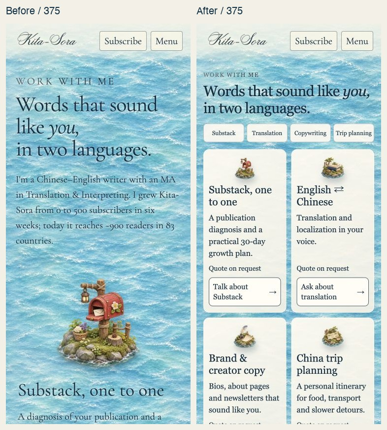
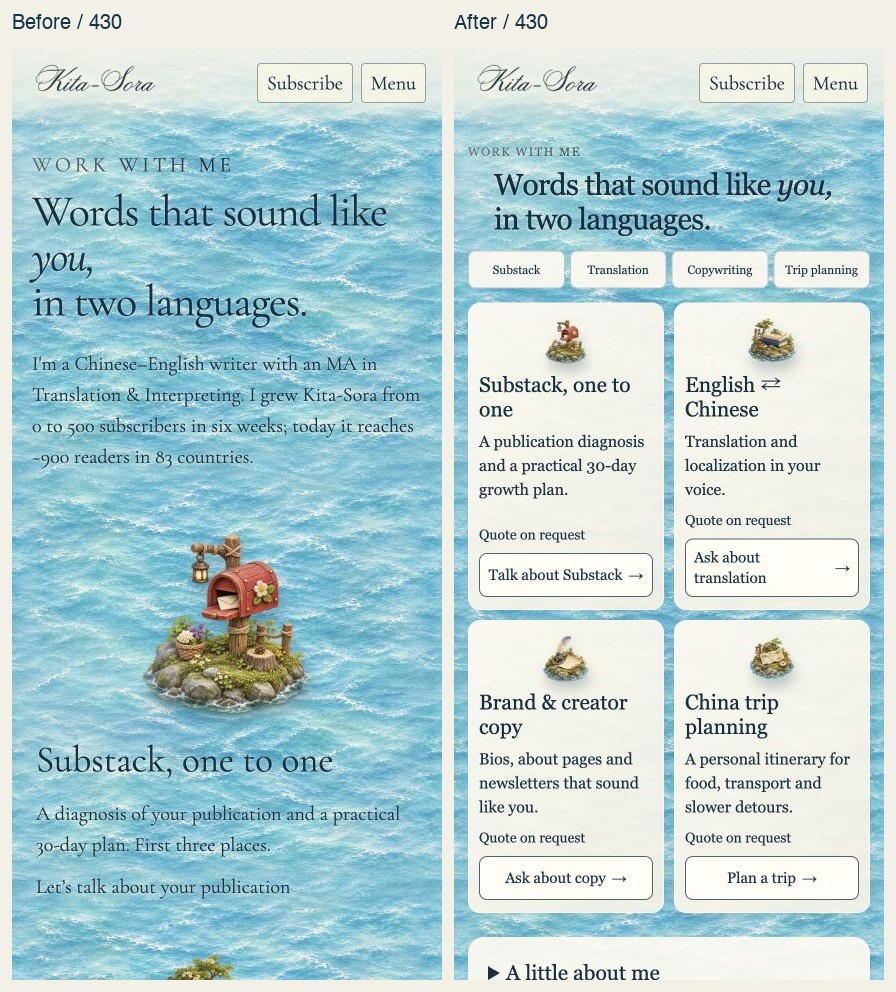
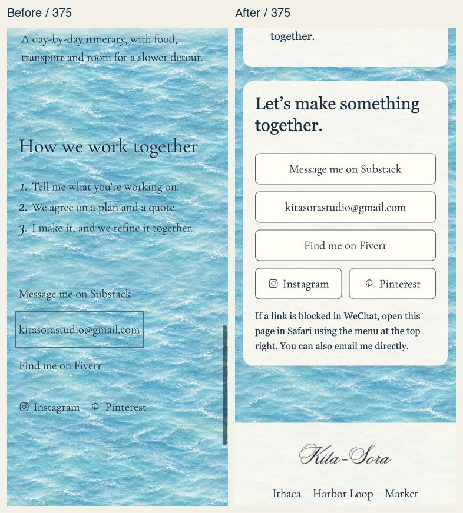
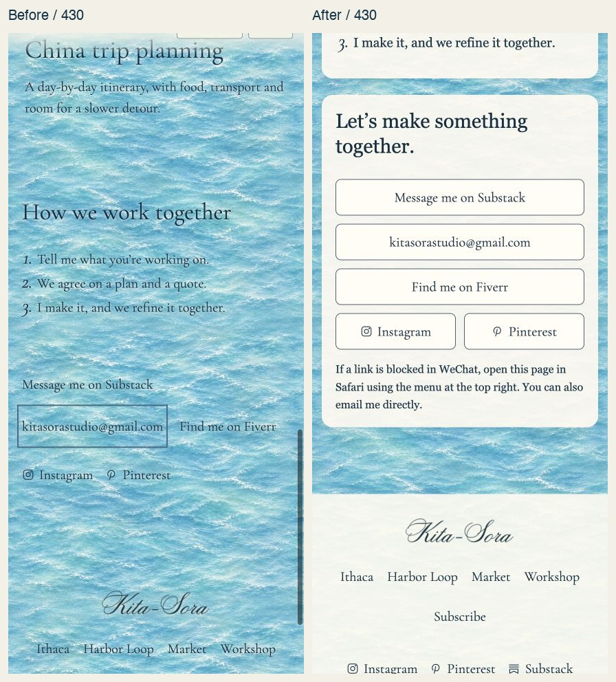
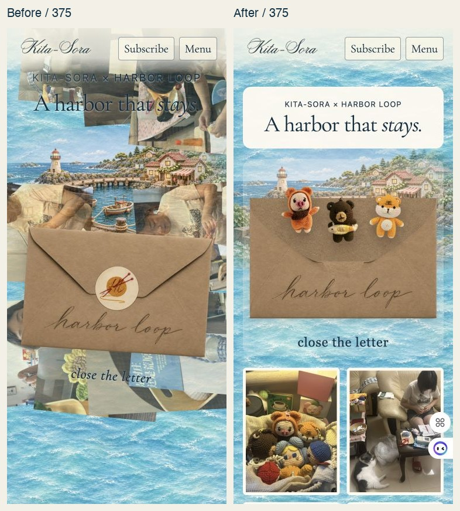
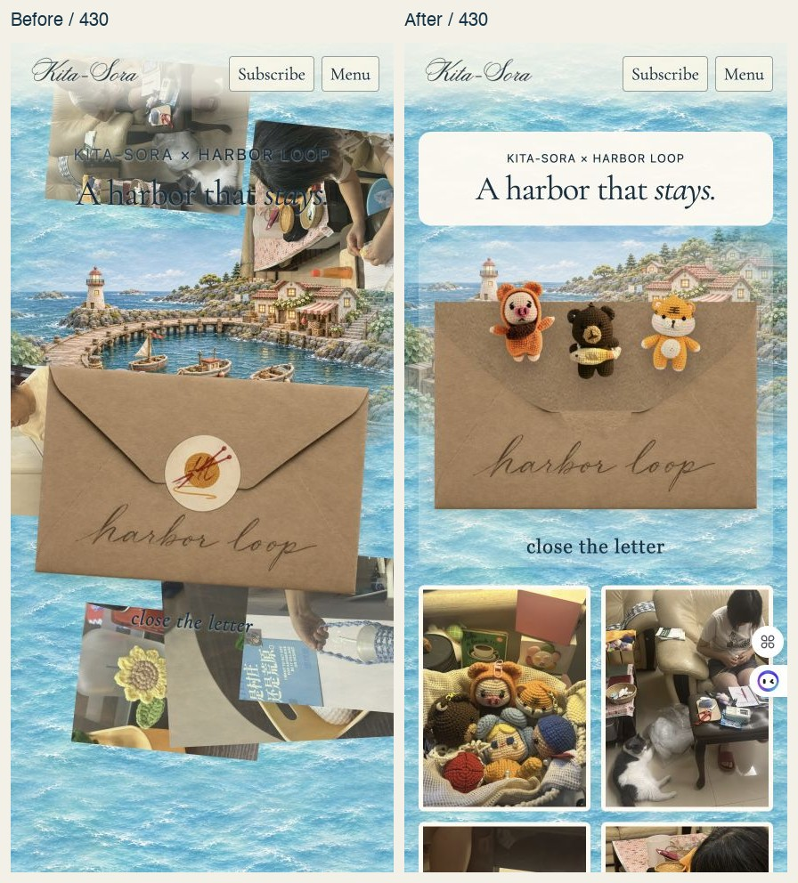

Workshop services & contacts · Harbor Loop photographs
Workshop preview · Harbor Loop preview
Before: deployment 3ebb8c89. After: a2b7447. Chrome viewports 375×812 / 430×932. These are browser checks, not iPhone Safari or WeChat certification. Real-device retesting is required before launch.
Four services, two columns, small illustrated icons, paper-backed copy and clear contact links. Rates are “Quote on request” until pricing is confirmed. 22 photographs were exported upright from original EXIF orientation; original files were preserved. Mobile photographs use an uncropped two-column grid below a separate envelope and heading.





